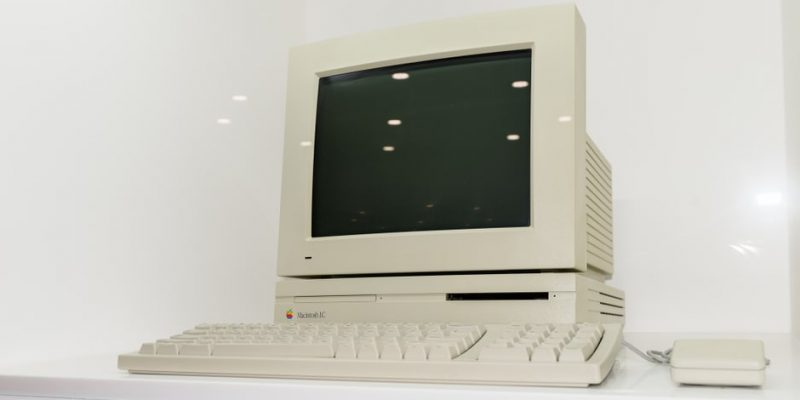

ERA DE NEGOCIOS
Uso de computadoras, para inventarios, nóminas, etc, principalmente en entornos empresariales debido al alto costo del equipo.
Uso de computadoras, para inventarios, nóminas, etc, principalmente en entornos empresariales debido al alto costo del equipo.